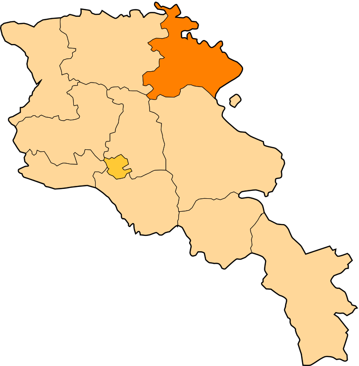

Հետ գնալ
Տավուշի մարզ
Տավուշի մարզ, մարզ Հայաստանի հյուսիսարևելյան մասում։ Մարզկենտրոնը Իջևան քաղաքն է։Մարզը սահմանակից է Վրաստանին,
հյուսիսում և արևելքում՝ Ադրբեջանին։ Հայաստանի պետական սահմանից մարզին բաժին է ընկնում 400 կմ հատված, որից 352-ը՝ Ադրբեջանի հետ։
Մարզի կենտրոնով դեպի հյուսիս-արևելք հոսում է Աղստև գետը։ Ամենացածր կետը գտնվում է Դեբեդավան գյուղի մոտ (380 մ), ամենաբարձր կետը՝ Միափորի լեռնաշղթայի
Մուրղուզ լեռն է (2993 մ)։ Հայաստանի Տավուշի մարզը տարածվում է Փոքր Կովկասի լեռնաշղթաների արտաքին շարի վրա (Վիրահայոց, Գուգարաց և Միափորի լեռներ)։
Գտնվում է Հայաստանի չափավոր խոնավ տարածաշրջանում։
Տավուշի մարզի քաղաքներն են՝
Տավուշի մարզի տարածաշրջաններն են՝
- Իջևան
- Տավուշ(նախկինում՝ Շամշադին)
- Նոյեմբերյան
- Դիլիջան